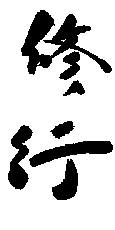
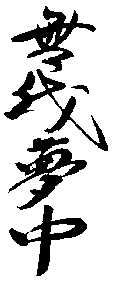

History of Aiuchi Jiu Jitsu
The Aiuchi Jiu Jitsu Association was formally created in 1995 with the merger of two Associations which held broadly the same aims: to serve their members, and to develop their skill in jiu jitsu. They also had the goal of providing all the support that clubs require, like grading events, courses and insurance, at a minimal cost. It is still important to Aiuchi to ensure that its members are treated with respect, to build a confident and friendly environment in which to train.
The style of jiu jitsu practised within the Aiuchi Jiu Jitsu Association has been influenced by the instructors who brought it to Britain from Japan via Australia and Germany. Its lineage is confused, but there are clearly influences in style that point to its origins in Japan.
The founding members of the Aiuchi Jiu Jitsu Association began their jiu jitsu careers in the Jitsu Foundation, which was the creation of Peter Farrar. Peter began his jiu jitsu career in 1969 at the age of 9, learning from Brian Graham who brought his very individual style of jiu jitsu to Britain from Australia in 1967. Peter and Brian, had very different physiques, and very different styles of jiu jitsu. Graham's smaller stature meant that his techniques were typically short, punchy, simple and effective. While Brian had developed his own very effective style of jiu jitsu, and had run a successful dojo in Keighley for many years, it was his student Peter who had the flair and charisma to build the club into a large organisation. Sadly, Peter died in 1998.
Brian Graham began training in judo and jiu jitsu with Matthew Komp in Melbourne, Australia in 1957 and was awarded his Shodan in 1967. Komp's dojo was a centre for many martial arts, and often attracted visiting instructors from Japan and Korea. He maintained connections with Akira Miura, who taught a number of judo seminars in Australia, and was involved in judo training for the Tokyo Police. On a visit to Japan Komp's technique was likened to Shorinji Kempo. It is unclear if there was any indirect link to Shorinji Kempo (which was itself developed Aikijitsu), but the name stuck, and for many years the style of jiu jitsu in Britain was often referred to as 'Shorinji Kan'.
Matthew Komp originally learned judo, jiu jitsu, aikido, wrestling and boxing as a young man in Germany. Komp had been taught judo and jiu jitsu by his instructor in Cologne, Hesser Mayur, and later by another German (Wolfe?) who had trained in Japan prior to the Second World War. The style of judo taught by Mayur, and Komp was greatly influenced by Kenshiro Abbe. Abbe spent some years teaching judo and aikido in mainland Europe before being invited to Britain in 1955. Komp, who had trained as an engineer, emigrated to Australia in the 1950s, where he established his judo school in Melbourne.
It is unclear which style, or styles, of jiu jitsu Komp was taught. There seems to be a marked influence from the judo of Kenshiro Abbe, and verbal history suggests that the jiu jitsu hails from the Kodokan. However, the influences of other instructors probably have a greater effect on the style as it exists today.
The collective goal of the Aiuchi Jiu Jitsu Association fosters the ideals of learning jiu jitsu by testing, experimenting, and adapting techniques in order to improve and perfect them. It maintains the goals of developing character through the perfection of technique, and training with a partner as a way of gaining insight and compassion. These ideals seem compatible with those fostered by Jigoro Kano in the Kodokan, and by the principles espoused by Kenshiro Abbe.
History of Jiu Jitsu
Under the Feudal System of Japan, several military arts flourished among the samurai class. Examples of these arts are archery, fencing, horsemanship, the use of spears, the Katana "sword of the Samurai" and other weapons. All of these forms were more or less familiar to the people of most European nations. Virtually all of the martial arts have been practiced in the Western World with an excellence equal to the Japanese, although their forms and methods were not quite the same as those practiced in Japan. The skill of gaining victory by yielding to the opponent's strength appears to be an art peculiar to Japan: no similar art form has ever been known or practiced in any European country.
Although the origin of Jujitsu is not clear, and no fixed date of its first appearance can be ascertained, there is no doubt that it is a purely Japanese art. Further, it has not been derived from ancient Chinese Martial Arts as some scholars of the martial arts have proposed. It has been a common belief of various researchers that a Chinese priest named Chin Genpin brought the art of Kempo, "kicking and striking", to Japan around 1659. In 1659, Chin Genpin became a naturalized Japanese subject and died in 1671.
While engaged in the practice of Jujitsu at the Kokushij Temple in Tokyo, he taught three ronin (out of work samurai) named Fukuno, Isogai, and Miura. After extensive development of their skills, they founded three different Jujitsu Ryu independently of one another. It is not possible that Chin Genpin first introduced Jujitsu into Japan, because Chinese Kempo (which may have been brought over by him) is quite different from Japanese Jujitsu, and because some arts resembling Jujitsu can be traced back to before the time of Chin Genpin in Japan.
Evidence that Jujitsu prevailed in Japan in ancient times is indicated by an incident, which occurred in 24 B. C., when the Emperor Suinin ordered two strong men named Sukune and Kuehaya to wrestle in his presence. This struggle to test the strength and courage of the two ancient giants consisted mainly of kicking, hitting, and gouging with Sukune gaining advantage of his opponent by breaking his ribs, after which he "trampled" upon his loins and back until Kuehaya was fatally injured. Although this incident is generally cited as being the origin of wrestling in Japan, it would seem that it was actually more in the nature of Jujitsu in view of the fact that Kuehaya was kicked and gouged to death.
Sumo wrestling is the national sport of Japan, but it is not the only nationalistic sport derived from the ancient court wrestling of the Nara emperors. When wrestling was banned by edict in 1175 A. D., an atmosphere fostering creative development of all types of hand-to-hand fighting arts was started under the influence of the military. This developmental period lasted several centuries and continued even after the Portuguese explorers arrived in 1543. Ultimately, no less than 725 official documented systems of Jujitsu were developed all of which concentrated on situations in which no "major" weapons were involved. All together, these systems were called Jujitsu.
As it is not possible to discuss all of the different branches (Ryu) of Jujitsu, this writing will mention a few of those, which are generally considered to the most significant developments in the art. The oldest Jujitsu movement is the Takenouchi-Ryu, purported to have been originated by Takenouchi Hisamori, a native of Sakushu, in the year of 1532. This branch taught Kogusoku, or the art of seizing, which is somewhat different from the pure art of Jujitsu. The Takenouchi-Ryu may be regarded as the primal system for the teaching of arts similar to Jujitsu. Fukuno Schichiroemon of Temba originated a second system called the Kito-Ryu. This Ryu `appeared in the middle of the seventeenth century. Prominence of the "Art of Throwing" (Nage-waza) and "Form Practice (Kata) gave the Kito-Ryu great prestige and popularity. In close connection with this branch was a third branch called the Jikishin-Ryu, whose founder was Terada Kanemon, a native of Unsho, and the contemporary of Fukono. Both Fukuno and Terada lived about the middle of the seventeenth century in somewhat close relationship to each other. They established two separate systems of Jujitsu some years before the time of Chin Genpin. These two systems appear to be the oldest of all the varied systems of Jujitsu.
Inugami Nagakatsu of Omi founded the Kiushin-Ryu. The date of its founding is uncertain, and there are some reasons to believe that this branch was derived from the Kito-Ryu. Inugami Genpin, the grandson of the founder, attained such eminence through his skill at the Kiushin-Ryu that he came to be regarded as the founder of the school. The Sakiguchi-Ryu, Founded by Shinbukawa Bangoro, are two other well-known Ryu of Jujitsu. The Yoshin-Ryu, or the Miura-Ryu, and the Tenjin-Ryu were also prominent systems.
The Yoshin system, founded by Yoshin Miura, taught that many illnesses were the result of a disproportionate use of mind and body. Miura devised several Jujitsu methods involving "arresting devices". After a lengthy study with two of his disciples, he developed fifty-one arresting methods, His students, following his death, established systems of their own, further expanding his teachings.
The Tenjin-Shinyo-Ryu was founded by Matayemon Iso, a student of the Yoshin-Ryu. After several years of studying, Iso set out to tour the country and, at the same time, test his ability. Every where he traveled he competed with renowned masters in Jujitsu tournaments. His proficiency was such that he never lost a contest.
The branches of Jujitsu grew during the feudal period, particularly during the time of Iyemitsu, the third and ablest of the Tokugawa Shogun, under whose government feudalism was completely established in Japan. The art of Jujitsu continued in various provinces in Japan until the later part of the eighteenth century, when it began to decline with the impending fall of feudalism. Later, Jujitsu fell into disuse with the abolition of the feudal system (1860-1865) and became almost extinct.
At the turn of the seventeenth century, Japan was in disorder and disunion. Three able generals successfully subdued the other warlords. The Tokugawa clan obtained supremacy and assumed the Shogunate. A strict hierarchical social order was imposed in which the descending scale ran from the warriors down through the peasants, artisans to the merchants at the bottom. The Shogunate put tax collecting and its finances in order, administered careful control of the population, and generally executed a viable dictatorship. This may well have been the world's most ambitious effort to make time stand still. The Tokugawa rulers brought a reasonable degree of order and unity to Japan for almost two hundred years.
During the time of the Tokugawa regime, the role of the emperor was emphasized as the focal point of Japanese life, even though he was living in genteel poverty in his secluded Kyoto court. Shogun and commoner alike ignored him.
In 1573 Oda Nobunaga became Shogun and for nine years gained control of all most all of Japan. Nobunaga was assassinated in 1582 and the commoner Toyotomi Hideyoshi took over of the government and continued to unify the country. He ruthlessly put down any traces of insurrection and revived the old gulf between the warriors (the samurai) and the commoners by introducing restrictions on wearing the long sword. The long sword was restricted to the samurai class.
In 1603 Tokugawa Leyasu became Shogun and was determined to ensure his family's control of the government. The Tokugawa period brings great change to the social history of Japan. The bureaucracy of the Tokugawas was all-pervading. Not only were education, law, government and class controlled, but also even the dress and behavior of each class was dictated. The traditional class-consciousness of Japan hardened into a rigid class structure.
With the death of the shogun Tokagawa Semochi, in August 1866, new struggles began to determine his replacement. Emperor Komei died in February 1867, and Mutsuhito succeeded him. In November, the new Shogun, Keiki, was forced to resign, and in January 1868, the young Emperor proclaimed the Shogunate abolished. Imperial rule was restored in Japan. The abolition of the Shogunate ended 265 years of Tokugawa Family rule in Japan.
At little past two in the afternoon on the thirteenth day of the tenth month of the first year of Meiji, which was November 26, 1868, in the Gregorian calendar, the Emperor took up residence in Tokyo and thus symbolized the opening of Japan's modern era. Tokyo was established as the new imperial capital and the arrival of the Emperor there gave it legitimacy.
That the Meiji Restoration was called a restoration was not mere chance. It was not a revolution, despite the changes it brought. The men of Meiji restored the Emperor to his ancient place at the center of Japanese life and restored to Japan the sense of national unity he represented. They renewed the vitality of existing Japanese institutions and added new ones. The Restoration was engineered by the upper class and it continued to be controlled from above with changes filtering down from the top.
The Imperial ordinance, prohibiting the samurai class from wearing swords in 1871, dealt a terrible blow to martial arts. The art of Jujitsu was no exception. The MILITARY CONSCRIPTION ORDINANCE OF 1872 established an army and a navy requiring all males who reached the age of twenty irrespective of class to register for military service, and to be ready for all emergencies. In the conscript army, the ordinary citizen was raised to the level of the samurai and was imbued with the Japanese warrior's code.
The Imperial Rescript For Soldiers and Sailors, a clearly Confucian document drafted in 1882, admonished them "to consider loyalty their essential duty, "to have "sound discrimination of right and righteousness, and to "make simplicity their aim". It was during this era that the founder of Kodokan Judo, Jigoro Kano (1860-1938), appeared. He was born in Makagemachi of Hyogo Prefecture, which is the current Kobe and came up to Tokyo in 1871 at the age of ten. Master Kano showed great promise in his academic pursuits. From the time of his arrival in Tokyo he attended private school where he pursued classical studies as well as yogaku, or western learning.
He was physically frail in his early youth and the thought of making himself stronger never left his mind. Kano learned that through the art of Jujitsu a person of slight build could throw or subdue a larger and more powerful opponent.
Master Kano decided to train in the art of Jujitsu and possibly make himself physically fit. During 1877, while attending the Imperial University in Tokyo, Kano found Hachinosuke Fukuda, the Master of the Tenjin Shinyo-Ryu. Kano promptly enrolled with Fukuda as a pupil. After attending classes during the day at the university, Kano could be found at the dojo practicing kata and randori. Due to his enthusiasm and effort he surpassed the senior pupils and became a ranking member of the dojo, with the title of Shihan-Dal, meaning, "representing the Master". The techniques of this Ryu of Jujitsu, such as atemi-waza, shime-waza, and hodaku, were superior in many technical aspects to other Ryu. They contributed much to broaden Kano's scope of the art. In 1879, with the untimely death of Fukuda, Kano entered the school of Masammoto Iso, which was the main branch of the same Tenjin Shinyo-Ryu.
Here Kano continued his efforts to master the art of Jujitsu. During 1881, Master Iso passed away and Kano turned to an entirely new Jujitsu Ryu, the Kito-Ryu, where he was able to continue his training under the guidance of Konen likubo. When 22-year-old Kano took nine of his private students from the dojo of his master likubo in February 1882, and set up his own dojo, Judo didn't automatically spring into being. In fact master likubo came two or three times a week to help Kano's students. They were still learning Jujitsu rather than Kodokan Judo. Possibly Kodokan Judo came into being the day that Kano first defeated likubo. Until then Kano never had been able to throw him. That day in randori (free practice), Kano blocked every move likubo made, then applied two of his techniques - ukewaza and sumiotoshi - to throw the Jujitsu master no less than three times.
Kano explained: "Force your opponent to make his body rigid and lose his balance, and when he is helpless, you attack". Upon hearing this, likubo replied: "Your skill in randori surpasses me, so we will discontinue the practice sessions, but you alone should continue to study and perfect the randori techniques. However, your kata form needs further improving so in this area I will give you instruction.
The Tenjin Shinyo-Ryu, which Kano first studied, was especially known for atemi-waza and katame-waza, while the Kito-Ryu excelled in nage-waza techniques. Therefore, Master Kano was able to grasp the wide spectrum of Jujitsu, including its philosophy. The three Jujitsu Masters from whom Kano received tutelage were all foremost leaders in their respective Ryu and were also considered distinguished Grand Masters of the whole art of Jujitsu. Kano received further instruction from many other masters representing other Ryu. Jujitsu originally was not an application of consistent principles of science but simply a group of methods of attack and defense devised by different masters, one Ryu representing a group of methods devised by one master, and other Ryu representing the devices of others. This being the case there was no fundamental principle by which the validity of the various methods could be tested.
At this time, there seems to have been a significant growth in Kano's systematic development. This is the point where his personal philosophy coalesced into a coherent ideal. Kano having seriously studied Jujitsu came to conceive of one all pervading principle by which the various techniques could be evaluated, which was: Whatever be the object, it can best be achieved by the highest or the maximum efficient use of mental and physical energy directed to that purpose or aim". Going back into Japanese history, Kano studied all of the methods of attack and defense taught by different masters. He found that there were many methods which could stand his test, while others could not.
Preserving those which he deemed valid, and adding many other techniques of his own device which he felt confident could stand the test, he organized his own system of attack and defense in 1882. "JUDO" was the name of the principle together with its application, whereas Jujitsu was the name for a group of different devices not founded on such a principle. Kano named the institution where this principle was studied and its application taught, the KODOKAN, which literally means "an institution for studying the way". Inasmuch as the name Judo was used 250 years before Kano was born by the Jikishin-Ryu, it is necessary to qualify Kano's as Kodokan Judo.
When Kano was graduated from the Imperial University in 1881, he also had accomplished his primary aim, which was to make himself physically fit. Realizing that Jujitsu training could make an important contribution to everyday life, he decided that such profound benefits should not stop with himself but should be promoted widely among young people and carried on to future generations.
Kano taught in the government school, which educated the children of the House of Peers. The Emperor's son also attended this school. Kano later filled the post of Director of the Bureau of Primary and Secondary Education in Japan, and for twenty-four years served as the Principal of the Higher Normal College in Tokyo. Through teaching Kodokan Judo to the future teachers of Japan, Judo was introduced into the curriculum of the school children of Japan. Kano was thus able to propagate his art. Judo was almost immediately recognized, as a national exercise and Kano's method of teaching became a widely accepted instructional technique.
The true genius of Kano's Kodokan Judo is found in the leg movements, which had no counterpart in previous Japanese Jujitsu systems. While Kano was studying at the Tenjin Shinyo-Ryu he also studied European wrestling and Japanese sumo systems and combined elements of each to allow his 105 pound body to throw a burly 170 pounder by the name of Fukushima, who took great delight in smashing him about the mat. The Technique Kano used is now known as Kataguruma, or shoulder wheel. While keeping balance on a focal hip point, he soon developed a strong goshi, or hip technique. A brilliant invention of Kano's was the development of one-legged techniques.
In the past, Jujitsu techniques had been designed for action against men in armor and were greatly restricted. The older Jujitsu techniques were not designed to be used against a person in street clothes. The concept of off balancing one's opponent and using one's body in an efficient manner was also a new concept to martial arts. Kano started Kodokan Judo in 1882, at the Eishoji Temple. In his attempt to develop a workable sport out of the great number of Jujitsu techniques, Kano ran into trouble, because many people felt that those remnants of an obsolete political-social system would be best forgotten. Even though Kano was a modernist, he felt that the old knowledge, where applicable, should be refined and not destroyed.
Kodokan Judo became the focus of criticism from Jujitsu experts, especially from Hikosuke Totsuka, who was the most influential Jujitsu expert with a great number of followers. The other Jujitsu systems were suspicious of the practical merits of Judo in combat. Between the Kodokan Judo and other Jujitsu Ryu there developed a keen rivalry, especially between the Totsuka-Ryu and the Kodokan. In 1886, under the auspices of the Tokyo Metropolitan Police Board, a tournament between the two opposing groups was held to decide the supremacy of the two forms of Japanese self-defense. In the tournament, ten highly selected Kodokan experts competed, including the "Great Four" of the Kodokan: Tsunejior Tomita, Sakujiro Yokoyama, Yoshiaki Yamashita (who later went to the United States and taught Judo to Presideht Theodore Roosevelt), and Shiro Saigo.
Through the early years when Judo was developing at the expense of Jujitsu, Kano rose in the education field. He lectured at various schools and colleges and was appointed Principal of the Tokyo Higher Normal School. In 1889, he traveled to Europe for the first time as attaché to the Ministry of the Imperial Household, and represented the Ministry of National Education in China in 1902 and again in 1905. With such a fast rise in the demanding field of government service, it is amazing that he was able to spend any time on Judo. During his lifetime Kano developed a reputation as a scholar and spoke excellent English. At one time he gave a lecture at the University of Southern California in his major field, which was Japanese literature. Along with everything else, Kano had a great organizational talent. He built a nucleus of first rate judoka around himself, and exhorted the other Jujitsu masters to adopt his methods. By a firm but gracious example he saw the Kodokan Judo movement flourish. His idea of education involved not only teaching but setting a good example as well. His first students, mainly Yamashita, lsogai, Yokoyama, Saigo, Suzuki, Nagaoka, Mifune, and Tomita emulated him and carried his teaching and example throughout Japan.
Glossary
Some japanese you might hear in the dojo.
Words
- sensei
- instructor
- sempai
- highest student
- kiba dach
- horse stance
- swaru
- kneel down
- yamae
- stop
- hadjemi
- begin/start
- yoshin
- continue
- yeoi
- fighting stance
- rei
- bow
- tori
- defender
- uke
- attacker
Phrases
- sensei ne rei
- bow to instructors
Philosophy
Jiu jitsu is based on the idea of 'jiu'or 'ju' - adaptability, flexibility and gentleness, which encompasses the essence of the art and defines the approach to training and to life. It is not a system of self defence, but an approach to life. Although it may help you to defend yourself, that is only a small part of the art as a whole, and one that many see as being the least important. Being good at defending yourself does not necessarily equate to being good at jiu jitsu. Achieving a level of fitness to practice jiu jitsu will come as a consequence of training regularly. Your body will adapt and develop in the way it needs to in order to perform the techniques. You do not need to train excessively in order to develop your body to give you advantages in defending yourself. Equally, the development of your understanding of the art is a natural progression that will happen with time, through regular contact with the art and its practitioners. With both of these areas, physical and mental, the stress is on natural development, which will be different for each of us within each aspect of the art. It is often the case that those who are initially quick to learn the physical skills are slower to gain a deeper understanding of the art, and vice versa. A student should neither be put off if they feel they are developing more slowly than others in any area, nor feel complacent if they have learnt a particular aspect more quickly.
Ego
Jiu jitsu is not a competitive sport, the only person you compete against is yourself. You strive to improve your skill and understanding and improve the way in which you approach training. You should take pride in your achievements, but never feel superior to others. There is a wide variety of skills in jiu jitsu which take a lifetime to perfect. Everyone has weak points in their repertoire, and it is unlikely that any one person will be the best at everything. Attitude is an important element of any martial art, but is often the one area that people overlook in favour of physical skills. People often confuse confidence with arrogance. Confidence is the belief in your ability to do something, whereas arrogance is the belief that you are superior to others. It is usually the case that confident people do not feel the need to boast about their abilities, whereas arrogant people are often trying to hide their own lack of self-confidence by putting others down and proclaiming their own self worth. When someone says 'I'm the best' they are really saying 'Don't you think I'm the best?'. If you truly believe in yourself you don't need to ask the question.
Traditional/Modern
Our style has retained sufficient tradition to remind members of the roots of jiu jitsu. We line up and greet each other in a traditional manner, but this reflects equality, not hierarchy. However, observance of tradition is limited to ensure there is no hindrance to the development of the style and to keep it relevant to life in today's society. Where defences from, and uses of, traditional weapons are taught emphasis will always be placed on their application to a modern setting. To remain a modern interpretation of traditional techniques the art will need to change and to be re-interpreted. It is organic in nature, and even the best instructor cannot pass on all the skills and techniques learnt without some loss. That is why it is important to train with more than one instructor, and always to apply a critical eye to what you are taught, no matter what their level. Some techniques may be changed or forgotten and will need to be re-introduced and modified with time.
Training
The purpose of training is to acquire and perfect the techniques and principles of jiu jitsu, and to gain control over ones own body, mind and spirit. There is no single way to do this, but a good instructor will provide a variety of ways of training within their dojo over time. The atmosphere may sometimes be serious, at other times light hearted, sometimes intense, physically demanding, or relaxed as required. It is important that jiu jitsuka train in a variety of atmospheres so that they learn to adapt their training appropriately. People will respond in different ways to different methods of practice. Ideally instructors should respond to the atmosphere in a club and vary the training according to the mood. This doesn't mean that a lethargic club needs relaxed training. Often the opposite is required, but an instructor should gauge the mood and ability of their students in order to teach techniques in the most appropriate way. A student should feel free to train in any club within our organisation, or indeed other styles and other arts. They should question and interpret what they are taught and make it their own, but beware of thinking that all the techniques and principles employed in other styles can be applied to our art, for some do not combine well with Aiuchi Jiu jitsu. One important principle is that people learn better and quicker if they are relaxed. It is important that when showing someone a new technique they should learn it in an environment that is relaxed. Not only will they learn it more quickly, but they are also more likely to avoid injury. There is time enough later to make the training harder, faster and more demanding.
Serious Fun For All
To ensure safety an element of discipline and control is needed in the dojo. Acceptance of this should not be demanded, but rather should be 'given' by students in acknowledgement of the particular nature of the environment they have chosen to be involved with. However, instructors do not have the right to abuse this relationship, and a level of common sense and common understanding is required. Equally instructors cannot demand or expect to be given respect, but should strive to earn it through their words and actions. Our philosophy is that respect must be a two way thing between instructors and students, and must be freely given by both if it is to have any value . In the world of martial arts fear can often be mistaken for respect, and this is not acceptable to this Association. We believe that training should be enjoyable and that this can be achieved while still acknowledging and respecting the serious nature of the art. Aiuchi Jiu jitsu should also be available to all people, regardless of size, age, gender, race or creed, or to varying levels of fitness or physical ability. Our teaching methods and grading systems will be flexible enough to reflect this, and yet maintain high standards by demanding the best that each individual has to offer at their level of achievement and understanding.
Application on the street
Aiuchi Jiu jitsu should only ever be used in self defence, or defence of others, in situations where there is a real physical threat. A member must never start a confrontation in order to test skills or techniques, or use his or her abilities in order to force others to act against their will. The philosophy of Aiuchi Jiu jitsu is that in most situations physical conflict can be avoided, and that to fight is to lose, regardless of the outcome.
Teaching and Learning
Aiuchi Jiu jitsu instructors should be seen to reflect the value of the organisation's philosophies and to pass these on through good example. Teachers are those who have been fortunate enough to develop to that level of understanding, but in reaching this stage should also have developed the humility to recognise that the student is equally important, and that their position as an instructor is not an indication of value or status. Instructors are still students themselves, and should be both willing and able to learn from other instructors (whether they be more experienced, peers or less experienced), and importantly instructors should also be willing and able to learn from their students. The learning cycle can never be completed.
Other Martial Arts
There are no restrictions on members learning or taking an interest in other martial arts, and this can often lead to a better understanding of the principles of Jiu jitsu. Equally, we welcome practitioners from other arts, so long as they come with a genuine desire to learn our techniques, teaching principles and philosophy. Students from other arts, no matter how experienced, will be expected to learn our syllabus from white belt onwards.
Life
Jiu jitsu should enrich your life. Knowledge of Jiu jitsu may prolong or preserve your life, it should not occupy the whole of your existence. If you spend all day everyday thinking about Jiu jitsu then you have no life. Jiu jitsu should be part of the mix, as with most things it is important to achieve balance.
Psychology
In the Japanese martial arts the training of the mind has always been at least as important as the training of the body - if not more so - and a variety of techniques and methods exist for psychologically conditioning the ju-jitsu trainee. Many modern schools ignore these aspects of jitsu, which is a great pity, because they considerably enhance a person's ability to understand and implement what has been learned.
Meditation is perhaps the best known direct psychological training and its benefits are widely appreciated; many people who have nothing to do with the martial arts also use meditation. The posture adopted for the traditional method of practicing meditation is known as zazen. There are many different drills through which which students are led until they are capable of meditating on their own. One classical drill involves sitting in zazen and imaging oneself on a mountain top. In front of you there is a white handkerchief covered by pebbles. The sensei tells you to empty your mind of everything and every time a thought drifts into your consciousness you should pick up a pebble and throw it away, the thought going with it. This is good training for stilling the mind. Such training greatly improves the ability both to concentrate and to identify needs and objectives more clearly.
These meditation practices, carried to the most extreme degree were at the heart of the samurai warriors' resolute acceptance of death and the code of busido, the way of the warrior.
The way of the warrior is death.
This means choosing death whenever there is a choice between life and death. It means nothing more than this. It means to see things through, being resolved. Sayings like 'To die with your intention unrealised is to dies uselessly' and so on are from the weak Kyoto, Osaka Bushido. they are unresolved as to whether to keep to their original plan when faced with a choice between life and death. Every man wants to live. They theorise with staying alive kept in mind. 'The man who lives on having failed in his intention is a coward' is a heartless definition. That to die having failed is to die uselessly is a mad point of view. This is not a shameful thing, it is the most important in the way of the warrior. If you keep your spirit correct from morning to night, accustomed to the idea of death and resolved on death and consider yourself as a dead body, thus becoming one with the Way of the Warrior, you can pass through life with no possibility of failure and perform your office properly.
This was the essence of the samurai ethos and an integral, indispensable part of the warrior's training for battle. For the modern day jitsu student, who is unlikely to be a soldier it may seem less relevant, but it can help considerably in the winning of the little battles that make up daily life. Meditation helps composure and self-control and alleviates stress-; it can provide a route to the acceptance of death; it also enhances life. One of the reasons for practicing mental control is that an uncluttered mind will quicken your reaction time. When blocking any attack the most salient factor tends to be the speed with which you recognise and respond to the initial attack. At a basic level of competence, reaction to attack is simply a conditioned reflex, but in the higher echelons of the martial arts this is not as desirable as it may seem. The beginner may think that being able to react 'without even thinking' shows the highest level of attainment, however, this is not always advantageous.
If people are trained to react reflexively in a certain way this can very easily be turned to their disadvantage. Do not fix you mind on things as they are not always as they seem, skill in self-defense is not gained by slavish mechanical repetition. Technique has its place, but so too does instinct. The true expert must always be ready to adapt at a fraction of a seconds' notice.
A number of terms exist describing the states of mind to which students of the martial arts aspire and which are considered to be useful and desirable for progress.
Mu-Shin, or empty mind, is a mental state in which students try to cut off thought and free themselves from distractions. This stopping of the thought processes, when successful, leads to a clear mind uncluttered by irrelevant or distracting ideas. The essence of Mu-Shin is in being ready and able to react without reflection in an emergency. It is essential not to be too tense since this can inhibit movement, nor so relaxed that you become careless, dreamy or sloppy.
Isshin(one heart or mind) and Zanshin (remaining heart or mind) are mental states or attitudes apposite to certain circumstances. Isshin is the spirit of abandonment, of throwing yourself into whatever you are doing with no thought for success or failure. This means attacking with all your spirit, fearless of any counterattack. If the attack is good you will succeed with your intention, if not, its intensity may at least unsettle your opponent. Attacking with this spirit in training - which is akin to risking everything on a single roll of a dice - will eventually bring results.
Zanshin means retaining conscious (or unconscious) awareness in the course of an action, not exactly holding back, yet being aware of possible subsequent consequences to the initial attack. It is a wider, more enduring spirit than that of isshin which is focused like a laser beam and discharged. Zanshin is the consciousness both preceding and continuing after the attack.
Another state of mind in ju-jitsu is Fundoshin, or 'immovable mind', and is a state of unshakable determination and is developed through training.
Mu-ga-mu-cho; The concept of selfless and total immersion in the training process of jitsu.
FACEBOOK
> Become A Friend
MAIL
> Contact Us
AIUCHI
> Our Jiu Jitsu Association